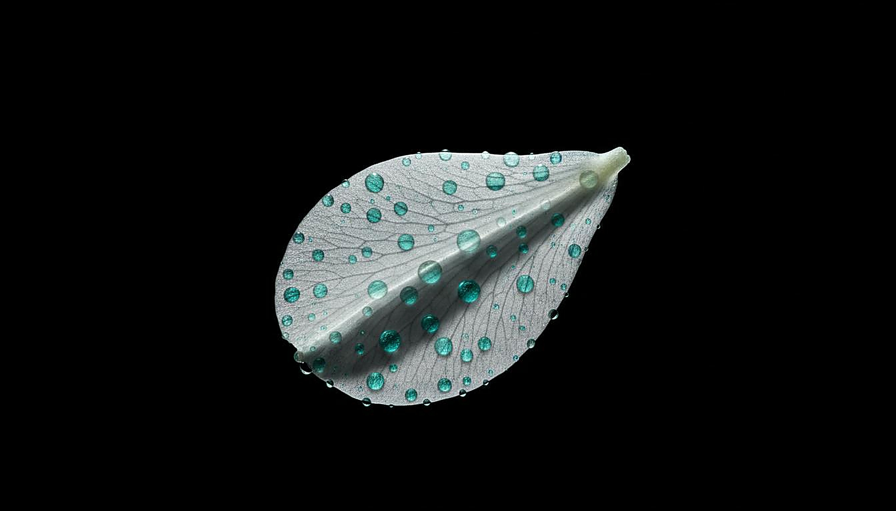
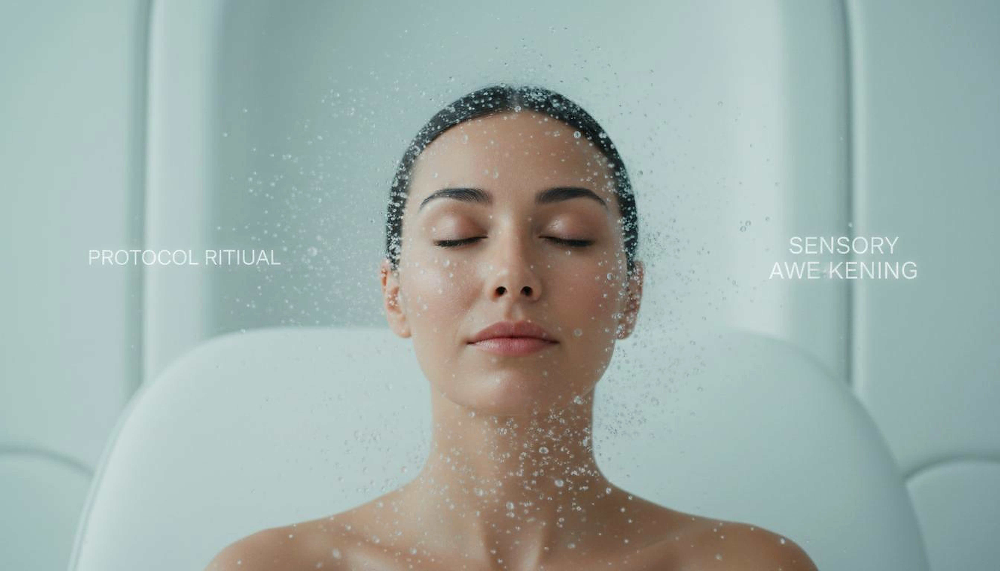

Questions & Answers
Clarity is part of the protocol. Here are the answers to the questions we hear most — about the science, the ritual, and the journey ahead.
01 — The Science
The PRNS Protocol isn't marketing language. It's a structured approach to skin cell signalling that has been studied, tested, and refined over two years of development.
PRNS stands for Peptide-Responsive Nutrient System. In the simplest terms, it's a method of delivering ingredients to your skin in a specific order — so that each step prepares your skin to receive the next.
Traditional skincare often piles active ingredients together without considering how they interact. The PRNS Protocol sequences them: first, gentle renewal (exfoliation); second, deep structural signalling (serum); third, protective sealing (day or night cream). Each step creates the optimal conditions for the next.
The result isn't just individual benefits from each product — it's a compounding effect where the whole becomes significantly more than the sum of its parts.
Yes. Every active ingredient in the Zero Lines range has been selected based on peer-reviewed clinical studies. We do not use ingredients because they are trendy — we use them because independent research demonstrates measurable effects on skin structure and function.
Our signal peptide complex is based on research showing enhanced collagen and elastin production over 8–12 weeks of consistent application. Our botanical peptide blend draws from studies on mechanical surface tension reduction. The ceramide complex in our barrier formulations is supported by extensive dermatological literature on transepidermal water loss reduction.
We publish our ingredient rationale and reference the key studies on our Science page.
The Flash Effect is what you see within hours to days: smoother skin surface, refined texture, reduced appearance of fine lines, and a more even tone. This comes primarily from our botanical peptide blend and hydration architecture — the skin's surface reflects light more uniformly.
The Longevity Effect is what happens beneath the surface over weeks and months: increased collagen density, improved elastin organisation, stronger barrier function, and measurably improved skin elasticity. This comes from our signal peptide complex and sustained nutrient delivery.
Most skincare products deliver one or the other. The PRNS Protocol is engineered to deliver both simultaneously — so you see results now, while building healthier skin for the future.
The Flash Effect is typically visible within the first 1–3 applications: smoother texture, more hydrated appearance, and a subtle luminosity. These are real, measurable changes — not optical illusions from silicones or fillers.
The Longevity Effect builds progressively. Most users report noticeable firmness and elasticity improvements within 4–6 weeks. The most significant structural changes — increased collagen density, improved barrier function — are typically measured at 8–12 weeks of consistent use.
Skin is living tissue. It responds to signals over time. The PRNS Protocol is designed for the patient user who understands that the most meaningful changes happen beneath what the eye can immediately see.
Because wrinkles are a symptom, not the disease. The visible lines and sagging that concern most people are the result of deeper structural changes: collagen depletion, elastin fragmentation, barrier dysfunction, and slowed cellular turnover.
If you only address the surface — filling lines temporarily, masking texture with silicones — you are managing symptoms while the underlying structure continues to degrade. Zero Lines addresses the architecture: strengthening the matrix that gives skin its shape, resilience, and capacity for self-repair.
This is why our results are not temporary optical effects. They are structural improvements that persist because the skin itself has become healthier.
02 — The Protocol
The PRNS Protocol is a ritual, not a routine. The order, timing, and consistency of application all contribute to the final result. Here is how to get the most from your products.
Morning (Daily):
1. Cleanse with your regular cleanser
2. Apply BioSignal Facial Serum to damp skin
3. Wait 60–90 seconds for absorption
4. Apply Environmental Shield Day Cream
Evening (Daily):
1. Cleanse thoroughly
2. Apply BioSignal Facial Serum
3. Wait 60–90 seconds
4. Apply Renewal and Repair Night Cream
Weekly (1–2 times):
After evening cleansing, apply Bio-Renewal Peeling Gel to dry skin. Leave for 10 minutes, then rinse and continue with serum and night cream. Do not use the peeling gel on consecutive days.
The four products are designed to work as an integrated system. Each one creates the conditions for the next to perform optimally. Using the full protocol will deliver the most significant and lasting results.
That said, we understand that some users prefer to start gradually. The serum is the structural cornerstone of the protocol — if you begin with one product, start there. The day and night creams can be introduced next, and the peeling gel added when your skin has adapted to the daily routine.
We do not recommend using the peeling gel without the serum and cream, as the skin needs the subsequent nourishment and protection after exfoliation.
Serum: 2–3 drops for the face, 1 additional drop for the neck and décolletage. The serum spreads easily on damp skin. More is not better — the active concentration is calibrated for this amount.
Day Cream: A pea-sized amount for the face. Warm between your fingertips before pressing gently into the skin. Add a second pea for the neck if desired.
Night Cream: A slightly larger amount than the day cream — approximately two pea-sized portions. The night formulation is richer and designed to sustain the skin through 8 hours of repair activity.
Peeling Gel: A thin, even layer across the face, avoiding the eye area. You do not need a thick coating — the enzymes work at the surface level and do not require occlusion.
Yes, with consideration. The PRNS Protocol is a complete system, but it can coexist with other products if you understand the sequencing.
Compatible: Gentle cleansers, sunscreen (always apply after the day cream), eye creams, and hydrating mists. These do not interfere with the active ingredients.
Use with caution: Retinoids, high-concentration vitamin C, and other strong actives. These can be used, but not in the same application as the Zero Lines serum. If you use a retinoid, apply it on alternate nights, or use it after the night cream has fully absorbed (30+ minutes).
Avoid combining: Other exfoliating acids or peels on the same day as the Bio-Renewal Peeling Gel. This risks over-exfoliation and compromised barrier function.
Nothing dramatic. Skin biology operates on timescales of weeks, not hours. Missing one day will not reset your progress.
However, consistency does matter. The signalling peptides in the serum work best when they encounter the skin regularly — this maintains the "conversation" between the formula and your cells. Think of it like exercise: one missed session is irrelevant, but irregular patterns slow cumulative progress.
If you miss several days, simply resume the protocol. There is no need to "make up" for lost time by using extra product. The formulations are calibrated for daily use, and exceeding the recommended amount does not accelerate results.
03 — Ingredients & Safety
Transparency is non-negotiable. Every ingredient is chosen for a specific biological purpose, and we tell you exactly what it does and why it is there.

Yes. The formulations are designed with sensitivity in mind. We avoid common irritants: no artificial fragrances, no drying alcohols, no sulphates, no parabens, and no silicones that mask skin issues rather than address them.
That said, "sensitive skin" is not a single condition. If you have a history of reacting to active ingredients, we recommend patch testing: apply a small amount of serum behind your ear or on your inner forearm for 24 hours before full facial use.
The Peeling Gel contains natural enzymes that are gentler than acid exfoliants, but if your skin is extremely reactive, start with once weekly rather than twice, and observe how your skin responds.
Zero Lines products do not contain retinoids, hydroquinone, salicylic acid, or other ingredients typically contraindicated during pregnancy. Our active ingredients are peptides, ceramides, botanical extracts, and hydration factors — all generally recognised as safe.
However, pregnancy changes skin sensitivity and reactivity in unpredictable ways. We strongly recommend consulting your obstetrician or dermatologist before introducing any new skincare during pregnancy or breastfeeding. Bring the ingredient list with you — it is published in full on each product page.
We use Pyrenean mineral water — sourced from natural springs in the Catalan Pyrenees, not far from our Barcelona laboratory. This water has a unique mineral profile that supports skin hydration at a cellular level.
Most skincare uses purified tap water or distilled water, which is chemically inert but offers no biological benefit. Pyrenean water contains trace minerals that have been shown to support skin barrier function and cellular energy metabolism. It is one of the details that distinguishes a functional formula from an exceptional one.
No. Zero Lines does not test on animals, and we do not work with suppliers who do. All our formulations are tested on human volunteers under dermatological supervision.
Our testing protocol involves patch testing, instrumental measurement (corneometry, cutometry, and VISIA analysis), and self-assessment questionnaires. This gives us far more relevant data than animal testing ever could — human skin is the only skin our products will ever touch.
The majority of our ingredients are plant-derived or synthetically produced. However, our peptide complexes are bio-engineered using fermentation processes that may involve trace dairy-derived substrates in the growth medium.
We are actively working toward a fully vegan formulation and expect to achieve this certification within the next production cycle. If vegan status is essential for you, please contact us and we will notify you the moment our certification is complete.
04 — Orders & Availability
Zero Lines is preparing for launch. Here is everything you need to know about availability, shipping, and how to secure your place in line.
We are currently in the final stages of production and regulatory compliance. The full PRNS Protocol — all four products — will be available for purchase in the coming months.
We are not rushing. The integrity of the formula, the stability of the packaging, and the quality of the manufacturing process all take precedence over arbitrary deadlines. When we announce a date, it will be because everything is ready — not because of market pressure.
Sign up for our newsletter to be the first to know when pre-orders open.
Yes. We will ship to the European Union, United Kingdom, United States, Canada, Switzerland, Norway, and selected countries in Asia and the Middle East from launch day.
Shipping rates will be calculated at checkout based on destination and order weight. EU customers will not pay additional customs fees. Customers outside the EU may be subject to local import duties and taxes, which are the responsibility of the recipient.
A waitlist will open soon. Joining the waitlist gives you early access to pre-orders, exclusive launch pricing, and priority shipping.
We will never spam you. Waitlist members receive only essential updates: the pre-order opening date, early access windows, and occasional behind-the-scenes content about the formulation and manufacturing process.
We offer a 30-day satisfaction guarantee. If you are not satisfied with your purchase for any reason, contact us within 30 days of delivery for a full refund. You do not need to return opened or used products — we trust our customers and do not believe in creating friction around honest feedback.
This policy reflects our confidence in the formulations. We have tested them extensively, and we believe the results speak for themselves. If they do not work for your skin, we would rather learn from that than keep your money.
05 — About Zero Lines
Zero Lines was founded on a single conviction: that the skincare industry has been asking the wrong questions for decades. Here is what we believe — and what we refuse to compromise.
The name is intentionally provocative — and intentionally misunderstood. Most people assume "Zero Lines" refers to zero wrinkles. It does not.
"Zero Lines" refers to the line between skincare and medicine, between beauty and biology, between what the industry sells and what skin actually needs. We erase that line. We do not believe in cosmetic approaches that ignore biology, or medical approaches that ignore the experience of using a product.
The zero is also a circle — a symbol of wholeness, of systems thinking, of the closed loop between formulation science and skin response. We do not treat skin as a surface to be decorated. We treat it as a system to be supported.
All Zero Lines products are developed, formulated, and manufactured in Barcelona, Spain. Our laboratory operates under EU cosmetic regulation (EC) No 1223/2009, which is among the strictest regulatory frameworks in the world.
The company is headquartered in Gibraltar, with our research and production facility in Barcelona. This dual location reflects our identity: Gibraltar as a place of strategic international connection, Barcelona as a city with deep traditions in both pharmaceutical science and design culture.
Zero Lines was founded by a team of biochemists, dermatological researchers, and formulation specialists who spent years inside the skincare industry before deciding it needed to change. We have worked for major cosmetic houses, pharmaceutical companies, and independent laboratories.
What unites us is a shared frustration: the gap between what science knows and what the industry sells. We started Zero Lines to close that gap — to create products that are as honest as they are effective, as beautiful as they are biologically sound.
We read every message. For questions, press inquiries, partnerships, or just to share your experience with the protocol, email us at info@zerolines.life.
Our laboratory in Barcelona welcomes visits from press, potential retail partners, and researchers. If you would like to arrange a visit, mention it in your email and we will coordinate.
Response time is typically within 24 hours during business days. We are a small team, but we are committed to genuine human connection — not automated responses.

The best way to understand Zero Lines is to experience it. Be among the first to receive the protocol when it launches.
Contact Us